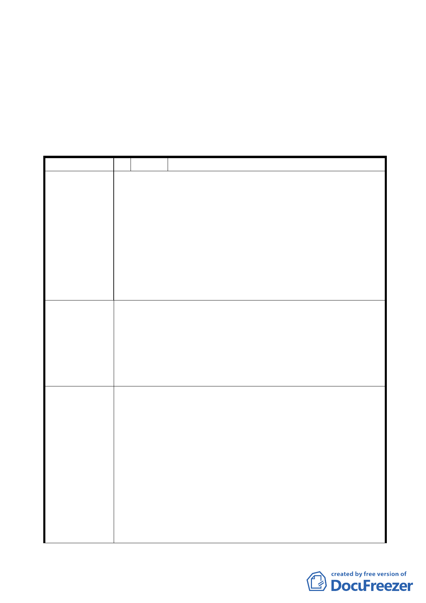

二、 請市府相關單位就計畫內容及後續拆遷安置、私有財產價值
之保障方式，加強與基地內土地、建物等相關權利人溝通說
明，並對區內社會弱勢居民之謀生提供必要協助。
附帶決議：上項決議經當場宣讀確認，不另提下次會議。
變更臺北市大同區捷運圓山站西側第三種商業區（特）及道路用地為交通廣
場用地細部計畫案
臺北市都市計畫委員會公民或團體所提意見綜理表
編 號 １ 陳情人 財政部國有財產局臺灣北區辦事處
1. 本案土地東臨圓山公園、中山足球場公共設施條件充足，
基於基地未來整體使用之考量與達到使用分區管制之目
的，故不同意辦理變更為交通廣場用地，請維持原使用分
區。
陳 情 理 由 2. 另查案內本局經管大同區大龍段一小段 264-14、264-43、
264-44、264-45、264-46、264-47 地號等 6 筆土地，其中
264-43、264-46 地號以辦理出租，其餘土地為他人民房占
用，變更後使用分區由第三種商業區(特)變更為交通廣場
用地，有損國庫及承租人權益。
1. 不同意辦理變更為交通廣場用地，請維持原使用分區。
2. 本案土地為內政部 96 年度「都市更新示範計畫」核定補助
建議辦法
之都市更新範圍，依都市更新條例第 8、20 條規定，本案
應可藉由都市更新程序，附帶辦理都市計畫變更，並藉由
權利變換方式由更新單元內相關權利人共同負擔更新單元
內公共設施用地之費用，以符合公平正義原則。
本案東側雖有圓山公園、中山足球場等公共設施，亦有捷
運圓山站可服務南北向交通，但缺乏良好的交通轉乘設施。本
案變更為交通廣場用地，規劃設置大眾運輸轉乘設施，可串連
孔廟、保安宮、圓山公園、市立美術館等兼具歷史文化與休閒
遊憩的觀光軸帶，帶動觀光與商業活動，對周邊地區整體發展
有實質助益。
市府回應意見
經查捷運圓山站西側（除電信用地外）係本府於 89 年 6
月 26 日劃定都市更新地區範圍，查迄今亦僅有 1 處皇翔建設
所提之都市更新事業計畫案，都市更新推動之執行成效有限。
該地區係本市 2010 年主辦國際花卉博覽會之場地，為展現最
佳之市容，該地區極需辦理改善。
故本府目前積極地將捷運圓山站西側分別朝向劃設捷運
-3-